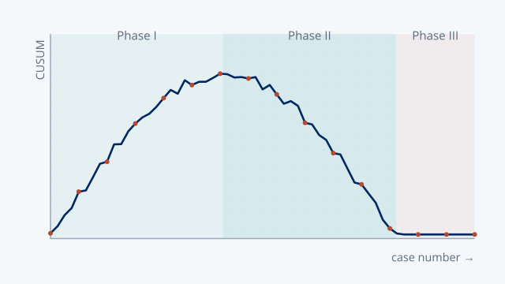
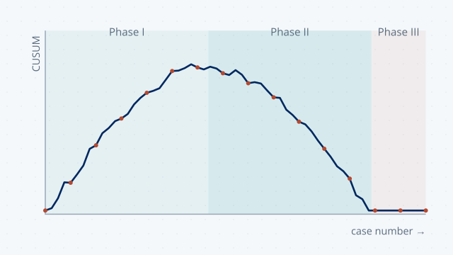
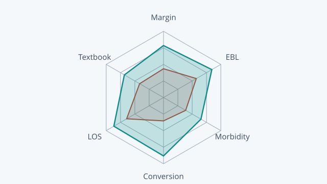
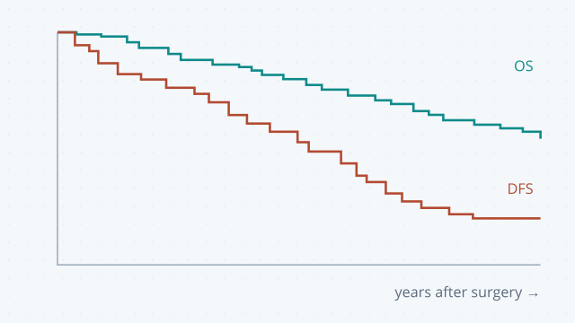

Research연구
Measuring what makes liver surgery precise정밀한 간수술을 측정합니다
Minimally invasive liver resection has spread quickly, but evidence about how surgeons learn it, how 3D planning and fluorescence change it, and how far robots can take it is still scattered across single centers.미세침습 간절제는 빠르게 확산되었지만, 외과의가 이를 어떻게 익히는지, 3D 계획과 형광영상이 수술을 어떻게 바꾸는지, 로봇이 어디까지 할 수 있는지에 대한 근거는 여전히 단일 기관에 흩어져 있습니다.
AIMILS brings these questions together in one registry and one analysis plan. Our studies are grouped into four areas below.AIMILS는 이 질문들을 하나의 레지스트리와 하나의 분석 계획으로 모읍니다. 연구는 아래 네 분야로 구성됩니다.
Flagship study대표 연구
AI-MILS Registry
Surgical Outcomes of Precision Hepatectomy Using 3D Reconstruction and ICG Fluorescence Imaging: A Multicenter Retrospective Cohort Study3D Reconstruction과 ICG 형광영상을 활용한 Precision Hepatectomy의 수술 성적 평가: 다기관 후향적 코호트 연구
- Design연구 설계
- Multicenter retrospective cohort다기관 후향적 코호트
- Participants대상자
- About 500 patients (expected)약 500명 (예상)
- Data collection자료 수집
- Jan 2018 – Dec 20272018.01 – 2027.12
- Study period연구 기간
- From IRB approval to Dec 2028IRB 승인 후 ~ 2028.12
- Primary outcome일차 결과
- Complications, textbook outcome합병증, Textbook outcome
- Long-term outcome장기 결과
- Recurrence, survival (DFS, OS)재발, 생존 (DFS, OS)
Robotic Surgery로봇 수술
Learning curves, difficulty-stratified outcomes and single-port techniques for robotic liver resection.로봇 간절제의 학습곡선, 난이도별 성적, 단일공 술기.

Learning Curve of Robotic Liver Resection: A Multicenter Analysis Using CUSUM and Risk-Adjusted Outcomes
We pool consecutive robotic liver resections across centers and use CUSUM and risk-adjusted CUSUM to define when surgeons move from the learning phase to proficiency.여러 기관의 연속 로봇 간절제 증례를 모아 CUSUM 및 위험보정 CUSUM으로 학습 단계에서 숙련 단계로 넘어가는 시점을 규명합니다.

Learning Curve of Robotic Hepatectomy Stratified by Iwate Difficulty Score: A Multicenter Analysis from the AI-MILS Registry
Does the learning curve depend on how hard the operation is? We stratify robotic hepatectomies by the Iwate difficulty score and compare how quickly each tier is mastered.수술 난이도에 따라 학습곡선이 달라질까요? Iwate 난이도 점수로 로봇 간절제를 층화하여 단계별 숙달 속도를 비교합니다.
Single-Port Robotic Hepatectomy: Technical Tips and Comparative Analysis with Multiport Robotic Approach
Practical technique for single-port robotic hepatectomy, with a comparison of perioperative outcomes against the conventional multiport robotic approach.단일공 로봇 간절제의 실제 술기 팁을 정리하고, 기존 다공 로봇 접근법과 수술 전후 결과를 비교합니다.
Laparoscopy & Precision Hepatectomy복강경 · Precision Hepatectomy
3D reconstruction, navigation and quality indicators for precise laparoscopic liver resection.정밀 복강경 간절제를 위한 3D 재구성, 내비게이션, 품질지표.

Preoperative Planning with 3D Reconstruction in Laparoscopic Liver Resection3D Reconstruction을 이용한 복강경 간절제술 수술 전 계획 및 결과
3D-reconstruction planning versus conventional CT-based planning: operative time, estimated blood loss, resection margin, complications and conversion rate.3D 재구성 기반 계획과 기존 CT 기반 계획을 비교: 수술 시간, 출혈량(EBL), 절제연, 합병증, 개복 전환율.

Utility of 3D Navigation in Difficult Laparoscopic Liver Resection (Posterosuperior Segments)난이도 높은 복강경 간절제술에서 3D 내비게이션의 유용성
Focusing on posterosuperior segments S7 and S8, we evaluate whether 3D navigation lowers conversion and vascular injury while securing margins.후상구역(S7·S8)을 중심으로 3D 내비게이션이 개복 전환과 혈관 손상을 줄이고 절제연을 확보하는지 평가합니다.

Defining Precision Hepatectomy and Developing Quality IndicatorsPrecision Hepatectomy 정의 및 품질지표 개발
A consensus definition of precision hepatectomy and a set of measurable quality indicators that centers can benchmark against.Precision hepatectomy의 합의된 정의와, 기관들이 서로 비교할 수 있는 측정 가능한 품질지표를 개발합니다.

Long-term Oncologic Outcomes after Precision Hepatectomy (DFS, OS)장기 종양학적 결과 (DFS, OS) 분석
Disease-free and overall survival after precision hepatectomy in the multicenter cohort.다기관 코호트에서 precision hepatectomy 후 무병생존(DFS)과 전체생존(OS)을 분석합니다.
Education & Training교육 · 훈련
Structured proctorship and hands-on MIS training for the next generation of liver surgeons.다음 세대 간외과의를 위한 체계적 프록터십과 MIS 실습 교육.

Effect of Structured Proctorship on the Learning Curve of Robotic Liver Surgery
Do surgeons who train with a structured proctorship programme reach proficiency faster and more safely? We compare learning curves with and without proctoring.체계적 프록터십을 거친 외과의가 더 빠르고 안전하게 숙련에 도달하는지, 프록터십 유무에 따른 학습곡선을 비교합니다.
MIS Swine Model Training ProgramMIS 돼지 모델 훈련 프로그램
A hands-on minimally invasive liver surgery curriculum on a swine model, from port placement to parenchymal transection.포트 위치 선정부터 간실질 절리까지, 돼지 모델을 이용한 실습형 미세침습 간수술 교육과정입니다.
Surgical AI & Autonomy수술 AI · 자율성
A shared language for how much a robot does during hepatectomy.간절제에서 로봇이 얼마나 스스로 수행하는지에 대한 공통 언어.

Levels of Surgical Autonomy in Robotic Hepatectomy: A Framework Inspired by Autonomous Driving
Borrowing the staged levels used for self-driving cars, we propose a framework that describes each step of robotic hepatectomy by how much of it the system performs on its own.자율주행의 단계 구분을 차용하여, 로봇 간절제의 각 단계를 시스템이 얼마나 스스로 수행하는지로 기술하는 프레임워크를 제안합니다.